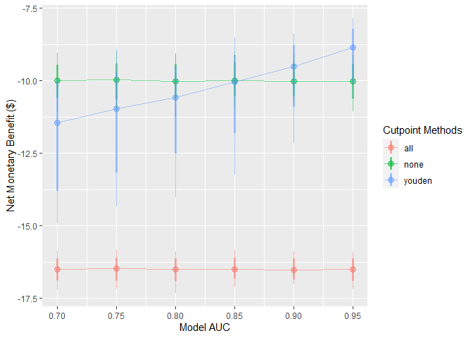

Overview
predictNMB is a tool to evaluate clinical prediction models based on their estimated Net Monetary Benefit (NMB).
predictNMB has two main functions:
-
do_nmb_sim(): takes user defined inputs for a given prediction model and population, then evaluates the NMB by performing simulations. -
screen_simulation_inputs(): callsdo_nmb_sim()many times, using a range of values for any of its inputs. This is useful for sensitivity analysis.
Installation
You can install the development version of predictNMB from GitHub with:
# install.packages("devtools")
devtools::install_github("RWParsons/predictNMB")Estimating model cutpoints
We must first define a hypothetical NMB associated with each square of a confusion matrix (2x2 table).
library(predictNMB)
fx_nmb <- get_nmb_sampler(
outcome_cost = 100,
high_risk_group_treatment_effect = 0.35,
high_risk_group_treatment_cost = 10
)
fx_nmb()
#> TP FP TN FN
#> -75 -10 0 -100We can then pass this to the simulation function. Required arguments:
-
n_sims: number of simulations to run. More simulations take longer, but are more stable -
event_rate: event incidence rate, or the proportion of patients experiencing the event -
sim_auc: vector of hypothetical AUCs; e.g.seq(0.7, 0.95, 0.05)orc(0.75, 0.80, 0.85) -
n_valid: number of samples the validation set draws within each simulation (evaluating the NMB under each cutpoint) -
fx_nmb_training: function-defined vector used to get cutpoints on the training set. Recommended to use constant values -
fx_nmb_evaluation: function-defined vector used to get cutpoints on the evaluation set. Recommended to use sampled values - (Optional) Users can pass a cluster as the
clargument. If it is passed, the simulations are run in parallel (faster).
library(parallel)
cl <- makeCluster(detectCores())
sim_screen_obj <- screen_simulation_inputs(
n_sims = 1000, n_valid = 10000, sim_auc = seq(0.7, 0.95, 0.05), event_rate = 0.1,
fx_nmb_training = fx_nmb, fx_nmb_evaluation = fx_nmb,
cutpoint_methods = c("all", "none", "youden"), cl = cl
)These simulations can be interpreted as a range of hypothetical situations under different levels of model performance within our specific healthcare setting. We can visualise how this change may affect preferences between the model-guided strategy versus a treat-all or treat-none strategy - in other words, using the model to determine who should get treatment, rather than everyone or no-one.
plot() on the object returned from this function to quickly inspect these trends:
plot(sim_screen_obj)
Here, we are visualising many simulations under different inputs. If we just want to inspect a single set of inputs, say when the model AUC is 0.9, we can run that simulation alone using do_nmb_sim(), or access it from our existing screen.
single_sim_obj <- do_nmb_sim(
n_sims = 1000, n_valid = 10000, sim_auc = 0.9, event_rate = 0.1,
fx_nmb_training = fx_nmb, fx_nmb_evaluation = fx_nmb,
cutpoint_methods = c("all", "none", "youden"), cl = cl
)
single_sim_obj <- sim_screen_obj$simulations[[6]]When plotting a single set of simulation inputs, we see the distributions of the NMB across all simulations under each strategy.
plot(single_sim_obj)